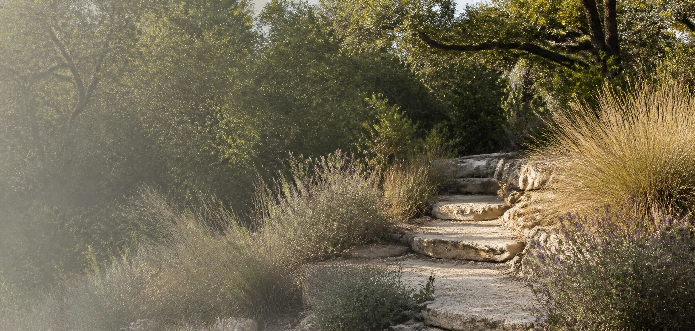
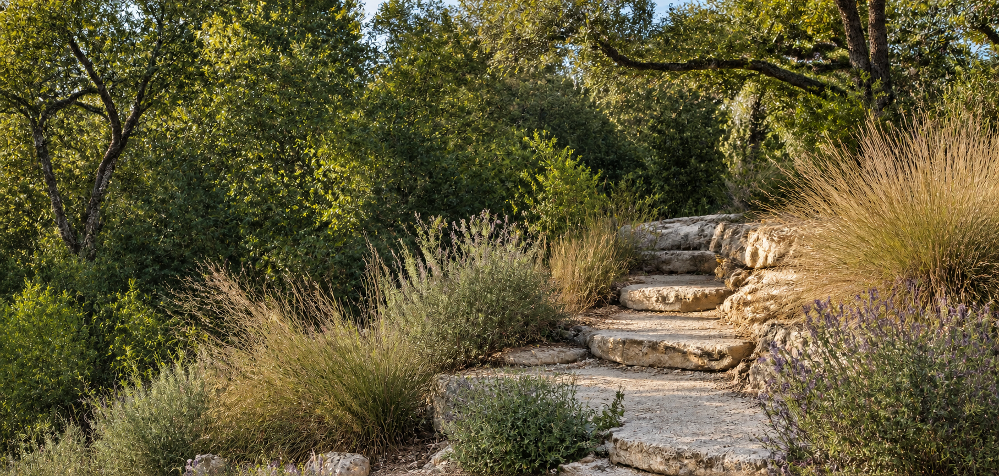

Mariposa · hero image review
Step 1 candidate only. The existing copy appears below solely to evaluate the image in context. This is a standalone composition study, not an implemented theme or a website release.


Candidate beside existing copy
Proposed separate image panel; crop position 70% horizontally. No baked-in fade or text overlay. The current site still applies its own gradients and filters.
Austin, TX 78731
Insight-oriented psychiatric care.
Psychiatry and psychotherapy for adults seeking clarity, stability, and meaningful change.
Crop checks
The path should remain readable in both crops. These are future-layout studies, not verification of the current site's responsive behavior.
Provenance: edited atmospheric regional imagery. The source's photographic provenance is unverified; neither image is represented here as the practice's office or a verified local landmark.